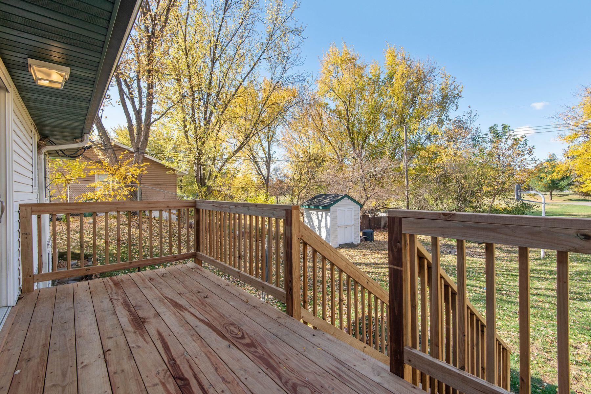

Köksrenovering i Umeå
Från ett par nya luckor till en totalrenovering av hela köket.
Köket är ofta det rum som betyder mest i ett hem – och det som tål minst slarv. Vi hjälper dig med köksrenovering i Umeå, från planering till färdigt resultat.
En köksrenovering kan vara allt från att byta ut några skåp till att riva ut och bygga upp hela köket på nytt. Vi har bland annat totalrenoverat köket i en Västerbottensvilla, där arbetet också omfattade en ny öppning med utgång till altanen.
Vi går igenom vad du vill ha ut av köket, vad som behöver göras och i vilken ordning. Snickeriarbetet – rivning, regelverk, väggar, montering av stommar och luckor, lister och anpassningar – sköter vi. Behövs el, VVS eller andra yrkesgrupper pratar vi om hur det ska lösas i ditt projekt.
Det här kan ingå
- Rivning av gammalt kök
- Nya väggar, regelverk och ytskikt
- Montering av köksstommar, luckor och bänkskivor
- Öppningar mot angränsande rum
- Lister, foder och de sista detaljerna
”Vi anlitade byggfirman S-Bygg här i Umeå för ett tag sen när vi skulle göra en totalrenovering av köket i vår Västerbottensvilla, vart även så att de fick förtroendet med att göra en öppning med utgång från köket till en större altan med …”
Annat vi kan hjälpa till med
 Utfört åt kund
Utfört åt kundOmbyggnad och renovering
Ombyggnader i villor och bostäder – när planlösningen inte längre passar.
Läs mer Utfört åt kund
Utfört åt kundNya öppningar och dörrar
Ta upp en ny öppning eller dörr – till exempel ut mot altanen.
Läs mer
Altaner och trädäck
Altaner, trädäck och arbeten där huset möter utemiljön.
Läs mer